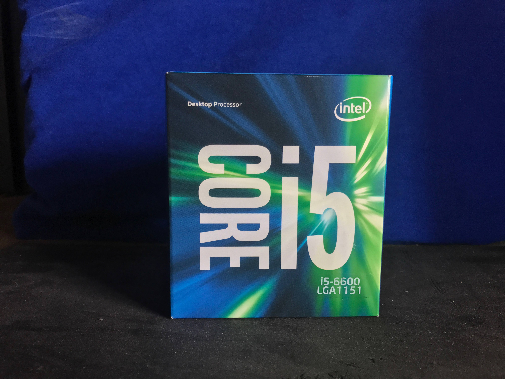

Intel - i5-6600 3.3GHz
I've had my i5-6600 for about a year now, and it's been great. I originally wanted to get a 6700, non-k because overclocking isn't a priority, but the price was simply too steep. Since I was on a budget the 6600 was the way to go for the gaming I planned on doing and at the time the price to performance curve was just right. I've never really used it by itself, since it's paired with my 1070, but I've never had any problems with it in the three different builds I've place it in.
cpu
